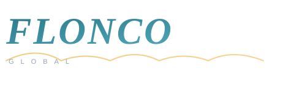
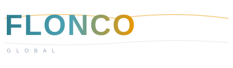
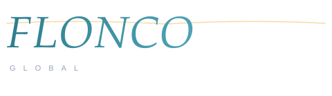
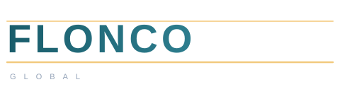

纯字母设计，去掉水印图标，保留流动感
推荐 — 最接近原 Gemini 风格
Light bg

Dark bg
设计理由：Georgia 斜体衬线字体自带流动感，字母间天然有连笔的视觉韵律。底部一条金色丝带线横向贯穿，呼应"丝滑流动"。整体风格优雅、有质感，和原 Gemini 生成的斜体流动风格最接近，且深浅底色都能看清。
最有活力
Light bg

Dark bg
设计理由：从青蓝渐变到金色的文字，模拟太阳能从吸收到输出的能量转换过程。Trebuchet MS 字体有微妙的人情味弧度，不像纯黑体那么硬。上方波浪线是情绪点缀，暗示光伏电流的波动形态。整体温暖又有科技感。
最安静高级
Light bg

Dark bg
设计理由：细体 Georgia 斜体去掉了所有多余装饰，只留一条极淡的金色弧线点缀。字体本身的斜度就是唯一的"流动感"来源。适合走高端极简路线的品牌，在白底名片、深色 PPT、报价单上都有很好的适应性。
最有力量
Light bg

Dark bg
设计理由：Segoe UI 特粗体 + 宽字距，传达自信和稳重。上下两条金色直线像太阳能电池板的边框，简洁有力。无衬线字体在现代网页和移动端最清晰。适合"做大做强"的外贸公司形象，在展会展板上辨识度极高。